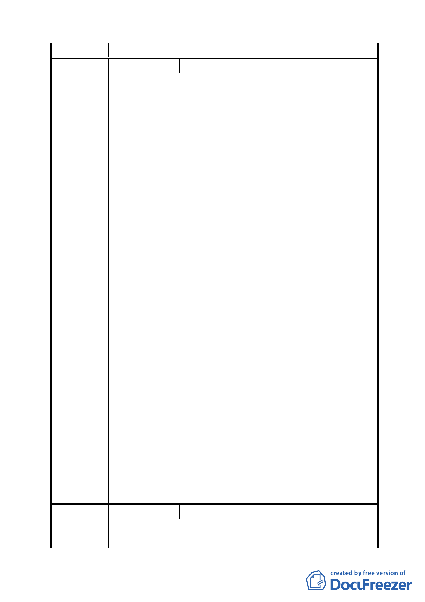

料」修正後通過。
編 號 7 陳情人 發展局函轉未具名市長信箱書面建議
我是一個道地的北投人，雖然不在北投出生，但是我從
幼稚園開始就住在北投，一路從北投國小、北投國中、復興
高中、文化大學現在工作也是在北投。北投一直是我引以為
傲的地方，我認為它是全台北市最適合人居住的區域，但是
最近得知北投的奇岩新社區將要開始動工，整個規劃案要將
原本的綠地，改建成六千多戶的大社區，我真的是太驚訝了，
我的第一個想法是北投即將淪陷了，即將失去她原本的風貌。
我一直引以為傲的北投以前沒有高樓大廈，在這幾年高
樓大廈也慢慢的出現了，但是街道並沒有相對拓寬，北投的
天際線開始變的複雜了，天空不再寬廣了，現在又將有一個
超大社區要興建，六千戶將會引進多少人口？北投又將遭受
一波人文的衝擊？在我的眼中，北投是有漂亮的山水及廣大
的天空，但是這些在建商或是地主的眼中，好像一點也不重
陳 情 理 由 要，我不知道郝市長是否有去過中永和、三重等地…..這些
地方龍蛇雜處，建築物一棟一棟的蓋，空屋一直增多，外來
人口一直增多，人口的周轉率超高，整個居住品質就在這些
過客的破壞下，蕩然無存，然而真正的獲利者(建商及地主)、
賺了錢，早已搬到高級住宅區去了。留下的是受苦受難的當
地平民百姓，北投是我的家，我永遠以它為榮，北投真的算
的上是大台北地區居民的後花園，這是大家所認同的北投，
也是北投人的驕傲，請市長有空去找找三重或是中永和的天
際線，那真的是您所希望看到的北投嗎？
請不要讓北投成為下一個三重或是下一個中永和，請留
給北投一個真正符合北投特色的都市規劃，而不是讓北投變
成一個錯誤都市規劃下的犧牲品。我們不能讓台北的後花園
繼續沉淪下去了！！！！
請幫忙再思考北投新奇岩社區的規劃，多留給我們一些綠
建 議 辦 法 地，少一點建設。
委員會決議
依市府所送「第 574
料」修正後通過。
次臺北市都市計畫委員會議決議回應資
編 號 8 陳情人 林宗明
市府於奇岩新社區闢建一條 8 公尺道路直沖本人住家形
陳 情 理 由 成路沖。何況本住家右方約 15 公尺處即為公館路 130 巷之巷
16